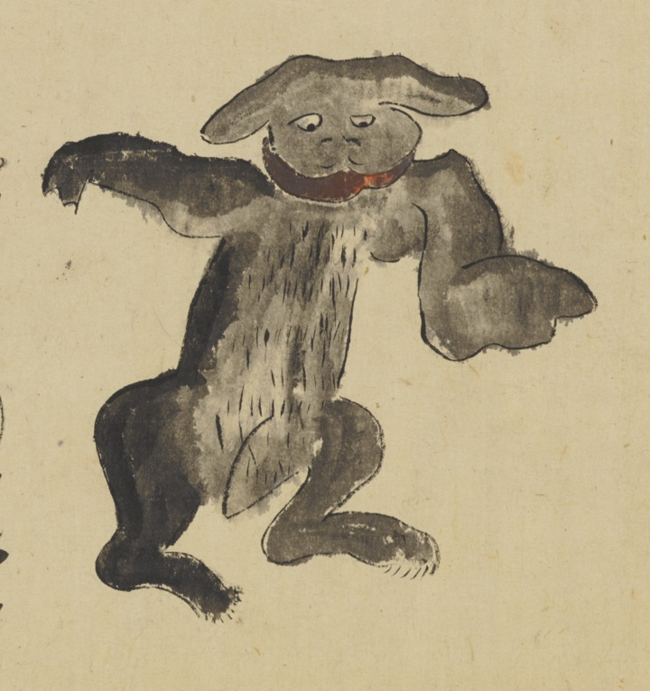

← 图鉴索引

エビス。山彦と図が関連。犬のような黒い獣。耳まで裂けた口。
著作者：長岡多門／出典：親書誌：U426_nichibunken_0448：諸国妖怪図巻／日付：2019／資源識別子：U426_nichibunken_0448_0001_0020
Copyright (c)2010- International Research Center for Japanese Studies, Kyoto, Japan. All rights reserved.